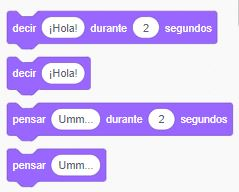
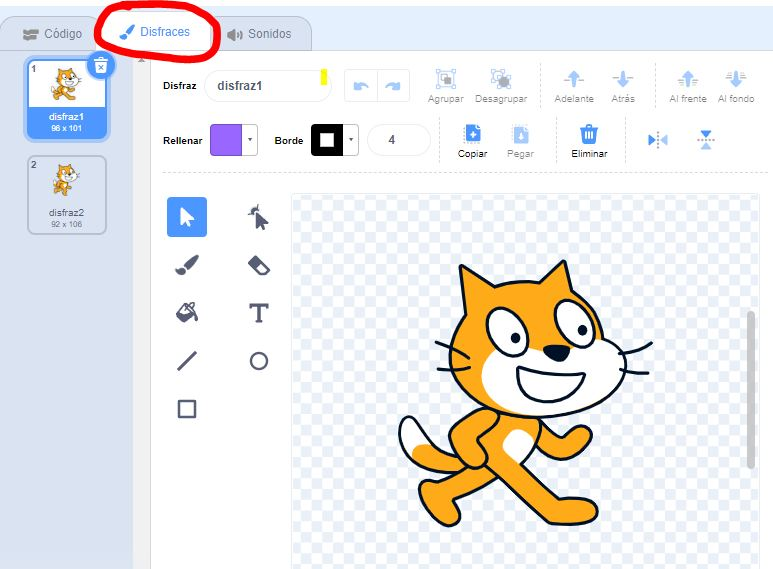
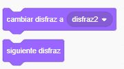
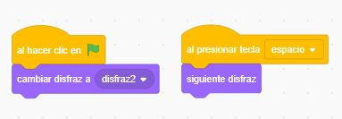
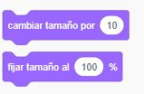
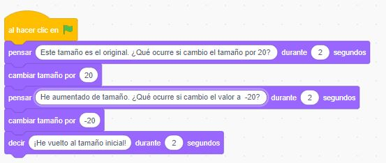
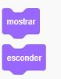
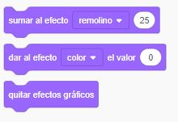
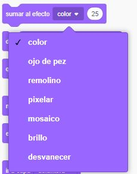
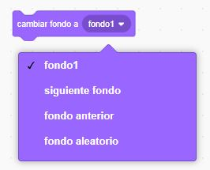

El bloque de apariencia permite, entre otras cosas, controlar los diálogos, cambiar el aspecto de los personajes y aplicar efectos. Vamos a estudiar las instrucciones que podemos utilizar
Introducción a la programación
2.2.2. Apariencia
Decir/pensar
Como su propio nombre indica, estas instrucciones permiten que los personajes digan algo o bien que lo piensen. La diferencia entre decir/pensar es el tipo de bocadillo que se muestra en el programa.
Como puedes ver, para cada instrucción pensar/decir hay dos opciones: sin indicar segundos o estableciendo un valor para el tiempo que queramos que se muestre el mensaje
- Crea un programa en el que el personaje diga "Hola mundo" durante 5 segundos cuando se pulse la bandera verde
- Crea un programa en el que el personaje piense "Estoy aprendiendo Scratch" cuando se pulse la tecla espacio
Los objetos pueden tener diferentes disfraces. Para modificarlos, puedes usar la pestaña Disfraces como se puede ver en la siguiente imagen:

Por defecto, el personaje principal en Scratch tiene dos disfraces. Podemos intercambiarlos durante el programa usando las siguientes instrucciones:
La primera de las instrucciones permite cambiar el disfraz a otro (puedes desplegar la lista para ver el listado de opciones disponibles). La segunda, en cambio, pasa al siguiente disfraz (será el que ocupe la posición siguiente en la pestaña disfraces)
¿Qué hacen los siguientes programas? ¿Ves la diferencia entre las dos instrucciones?

Tarea - Probando disfraces
Sigue los siguientes pasos para crear un programa.
- Crea dos disfraces nuevos desde la pestaña disfraces del programa
- Renombramos cada disfraz y cambiamos el color de cada uno.
- El primero se llamará original y no tendremos que cambiar el color
- El segundo se llamará azul y el gato tendrá ese color
- El tercero se llamará verde y el gato tendrá ese color
- Personaliza el cuarto disfraz con el color que quieras. No olvidas cambiarle el nombre
- En la pestaña de código, vamos a crear un programa con las siguientes instrucciones:Empezamos pulsando la bandera verde
- El personaje dirá "Empezamos el programa. Primer cambio de disfraz"
- Cambiamos el disfraz con la instrucción siguiente disfraz
- Incluimos la pieza para esperar 1 segundo
- Repetimos las instrucciones del apartado 3 cambiando en lugar de "primer cambio de disfraz" por "segundo cambio de disfraz", "tercer cambio de disfraz",... hasta que el programa muestre los cuatro disfraces que hemos creado
- Responde a la pregunta, ¿qué instrucción usarías para que el programa acabese con el personaje con el disfraz original?
Tarea - Otra forma de cambiar los disfraces
Ahora vamos a crear otro programa de cambio de disfraces, pero usando la instrucción cambiar disfraz a :
- El programa comenzará cuando se pulse la tecla A
- Usa las instrucciones que necesites para que se produzca la siguiente secuencia en el cambio de colores: verde, original, azul y personalizado (el que hayas incluido).
- Inserta las piezas necesarias para que el objeto diga "voy a cambiar al disfraz de color ..." (completa ... con el color correspondiente) antes de cambiar el disfraz. Por ejemplo, cuando inicies el programa, el gato dirá "voy a cambiar al color verde" durante 1 segundo y después cambiará a ese disfraz. Después dirá "Ahora voy a tener el disfraz original" y pasará el original. Repite el mismo proceso con el color azul y el personalizado que hayas creado
Tenemos las siguientes instrucciones para cambiar el tamaño de un personaje:

La primera de ellas, permite agradar o achicar el tamaño del objeto. Si ponemos un valor positivo entonces aumentará. Si es negativo, se reducirá el tamaño del personaje. Prueba el siguiente código. ¿Qué hace?

La segunda instrucción es parecida a la anterior. También cambia el tamaño, pero en forma de porcentaje, no con valores absolutos. Por ejemplo, si fijamos el tamaño al 50% el objeto reducirá su tamaño a la mitad. Para volver al tamaño original, usa fijar tamaño a 100%
Crea un programa que realice lo siguiente:
- El personaje dirá "Voy a reducir mi tamaño a la quinta parte"
- Incluye la instrucción (usando porcentajes) para que el tamaño se reduzca a la quinta parte del original
- Espera un segundo
- El personaje dirá "Vuelvo a mi tamaño original"
- Inserta la instrucción necesaria para volver al tamaño original
A veces en nuestro programa queremos que algún objeto se esconda y luego se vuelva a mostrar. Para conseguir este efecto, hay que usar estas instrucciones:

Para probarlas, crea un programa que esconda el personaje, espere 1 segundo y luego lo muestre
¿Funcionarán las instrucciones de decir/pensar mientras el objeto esté oculto? Crea un programa de prueba para comprobar tu respuesta
En las nuevas versiones de Scratch existen instrucciones que permiten insertar diferentes efectos que cambia la apariencia del objeto. Son los siguientes:
Si pulsamos la lista desplegable podremos ver los efectos disponibles:

¿Qué hace cada efecto? Para probarlos, crea un programa con las siguientes instrucciones:
- Inicia con la tecla "al presionar la bandera verde"
- Incluye la instrucción de decir indicando el tipo de efecto
- Aplica el efecto
En el documento que tienes que entregar, incluye un comentario describiendo cada efecto con tus palabras
Cambiar el fondo del escenario
Al igual que con los disfraces, es posible cambiar el fondo del escenario. Para ello, tenemos las siguientes instrucciones:
Si pulsamos la lista desplegable de cambiar fondo, tendremos las siguientes opciones:
Como podemos ver, es posible seleccionar el nombre del fondo, o elegir entre el siguiente fondo (funciona igual que la instrucción siguiente disfraz), fondo anterior o fondo aleatorio (cada vez que se ejecute el programa elegirá un fondo de forma aleatoria, no siempre será el mismo)
- Modifica el escenario del programa para que tenga tres fondos: uno de color azul, otro de color verde y otro con el texto FIN
- Crea programas de prueba para ver cómo funcionan cada una de las instrucciones de este apartado. En el documento, explica qué hace cada programa
Tarea global para el bloque apariencia
Vamos a crear un programa que usará algunas de las instrucciones que acabamos de ver. Lo primero que tendrás que hacer es personalizar el personaje y el fondo. Para ello, sigue los siguientes pasos:
- Cambia el personaje del gato por algún otro personaje de tipo animal
- En la pestaña disfraces, deja tres disfraces y personalízalos con los colores que quieras. El primero deberá llamarse disfraz1 y el segundo disfraz2
- Modifica el escenario para que haya dos fondos con dos colores diferentes. En el segundo fondo, deberás incluir también el texto "fin". El primer fondo será fondo1 y el segundo fondo2
Una vez que hayas personalizado el objeto y el fondo, incluye las piezas que necesites para generar el siguiente programa:
- Inicia al hacer clic en la bandera verde
- El personaje deberá mostrar un mensaje de saludo y esperará 1 segundo
- Después, se moverá diez pasos hacia arriba (recuerda girar el objeto) y después cambiará de disfraz
- El personaje pensará ¿qué ha ocurrido? ¿por qué he cambiado de disfraz? Y esperará dos segundos
- Después volverá a la posición inicial y recuperará su disfraz original
- Finaliza el programa cambiando al segundo fondo (fondo2)
Ten en cuenta que el programa debe funcionar siempre igual. Por tanto, debes asegurarte de que el fondo inicial siempre sea el fondo1
Obra publicada con Licencia Creative Commons Reconocimiento Compartir igual 4.0